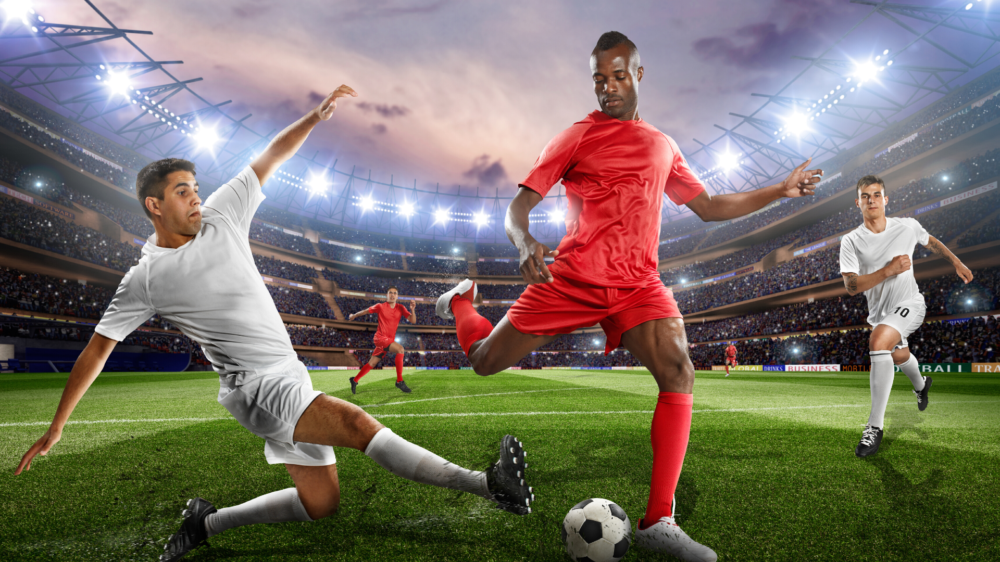

Fútbol
El fútbol un deporte favorito y la actividad que más disfruto compartir con mis amigos y comunidad. Jugarlo va más allá de patear un balón; representa el trabajo en equipo, la estrategia y la emoción de meter un gol. En nuestra región, las canchas se llenan de vida cada fin de semana, convirtiendo cada partido en una fiesta de sana convivencia y diversión. Correr en la cancha me llena de energía y alegría, demostrando que el deporte es el complemento perfecto para nuestra vida diaria y nuestras tradiciones familiares.